缘起


摘抄：「日语拼音方案」相关
Aziana
Aziana is a syllabary created by Warren Grant and inspired by the Korean, Chinese and Japanese writing systems. The idea was to devise a writing system that looks Asian in origin. It is a syllabary with consonants typically appearing on the top and vowels written underneath them.
Notable features
- Type of writing system: syllabary
- Direction of writing: left to right in horizontal lines
- There are no capital forms.
- There are special forms for an initial vowel or secondary vowel in a syllable and for final M, N, and Ng consonants.
Aziana alphabet
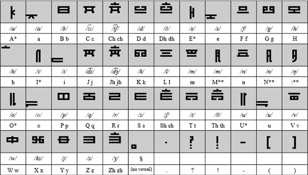Sample text in Japanese
原文
すべての人間は、生まれながらにして自由であり、かつ、尊厳と権利と について平等である。人間は、理性と良心とを授けられており、互いに同 胞の精神をもって行動しなければならない。
转写
Subete no ningen wa, umarenagara ni shite jiyū de ari, katsu, songen to kenri to ni tsuite byōdō de aru. Ningen wa, risei to ryōshin to o sazukerarete ori, tagai ni dōhō no seishinn o motte kōdō shinakereba naranai.
英译
All human beings are born free and equal in dignity and rights. They are endowed with reason and conscience and should act towards one another in a spirit of brotherhood. («Article 1 of the Universal Declaration of Human Rights»)
Kogo Kana
Kogo Kana is an alternative script for Japanese created by Martin Luan. It is designed to simplify the Japanese writing system, and is based on Martin's Kogor script.
Notable features
- Type of writing system: abugida
- Direction of writing: left to right in horizontal lines, or in vertical columns running from top to bottom and right to left
- Used to write: Japanese
- Each symbol has top and bottom, two parts. Generally the consonants are always on the top, vowels at bottom.
- As other East Asian writing systems, it allows writing in both horizontal and vertical two directions without rotating. The horizontal way is recommended since it would be easier to identify the vowel change.
- There is only one case
- The symbols within one word could be connected for easier reading.
- Some consonants might change the sound but the shape when combining with different vowels, e.g. S + i = Shi , H + u = Fu etc or being used as a particle, e.g. Ha sounds Wa
- There are no diacritics. The voiced and unvoiced letters are indicated by mirrored shapes. A short bar on top functions like a sokuon, which indicates geminate (doubled) consonants, long vowels
Kogo Kana
Sample text (horizontal)
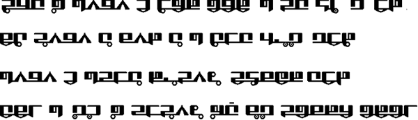Sample text (vertical)
原文、转写、英译
同上
Kogor
Kogor is a new universal writing system designed by Martin Luan for writing various languages, including most Latin letter based languages, such as English, French, Spanish, Esperanto, etc. With the extended version, it could be used to write Russian, Arabic and Chinese Mandarin (pinyin), Japanese, Korean, etc. Basically it has 32 letters, 30 with specific sound each and 2 representing Q and Y which have similar sound of K and I.
All letters have Upper and lower case two forms individually. When used in a word, letters are connected at bottom. Y in a word has a special short form. The second letter in double letters will be replaced by a short dash below the first letter.
Notable features
- Type of writing system: alphabet
- Direction of writing: left to right in horizontal lines
- All letters are formed by either horizontal or vertical lines, which make the appearance clean and straightforward.
- Similar sounds are paired, such as voiced or voiceless pairs, B-P, F-V,D-T, Z-S, etc, with similar look. The bottom line open to left or right shows the difference.
- The letter shapes are specified by the letter's openings at both upper and lower side, which allow the different version and new letters created under the same principle. For example, this standard Square Version could be adjusted to a curved version and still easily identified.
- Five basic vowels appear as diacritical marks on the vertical stem in lower case type. The upper cases are created by connecting the diacritical mark to the bottom.
- The heavy vertical line is optional in hand written style.
In general, this system is designed to be easily written, read and also adjusted for new letters and styles as required.
Kogor alphabet

Sample text in English
All human beings are born free and equal in dignity and rights.
Sample text in Esperanto
Ĉiuj homoj estas denaske liberaj kaj egalaj laŭ digno kaj rajtoj.
Sample text in French
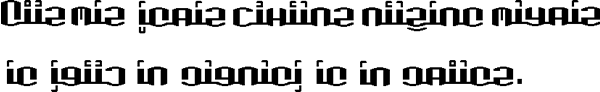Tous les êtres humains naissent libres et égaux en dignité et en droits.
Sample text in Spanish
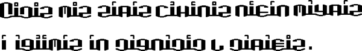Todos los seres humanos nacen libres e iguales en dignidad y derechos.
Other versions of Kogor for: Esperanto, Japanese, Korean and Russian (PDFs)
Manjikana 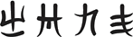
Manjikana is an alternative writing system for Japanese created by Fatbardh Kraja in 2018. Being certain that the current writing systems (Kanji, Hiragana, Katakana and Romaji) do not suit the Japanese language, the author was able to determine 8 unresolved issues while writing.
Inspired by the "Manji" symbol (卍), he was able to find 8 solutions, all included in one single writing system. Manjikana fits the Japanese language's characteristics, as well as all its dialects.
Notable features
- The Manjikana writing system consists of only 33 (+ 2 extra) sounds, which are more than enough to write the language; two other sounds are added to simplify the writings of integrated words.
- The entire system is inspired by the Manji symbol. The characters are distributed according to a few criteria, which makes them flow easily. This system is authentic and well-adjusted with the spoken language, though creating a new identity. This system releases the language from the use of the Kanji symbols and the ideas of its Romanization.
- The conclusion that there are 1236 syllables is reached. The system groups the sounds in syllables, based on a certain scheme.
- The system works for the standard japanese and Ainu language and all its dialects, since all of their authentic characteristics have been considered.
- The second level of the system is called Nikana. It groups two to four syllables in different ways, based on 8 different schemes, creating different visual representations for phonetically identic words. This helps the process of heterographics.
- The third level is called Aikana. It allows the writer to explore and experiment with different ways of connecting words to their own limit, without violating the basic rules.
- The first development allowing the vertical connection of words
- The second development allowing the vertical and the horizontal connection of words
- The third development allowing the creation of shapes.
- From the same symbol generates also the numerical system, consisting of 5 main rules:
- The system is decimal
- The number shows its own value
- The number shows its value of the power of tens through its position
- Groups numbers three by three starting from the end.
- Groups all zeros together.
- This system provides great solutions for the existence of homonyms by:
- Identifies the upper or lower accent
- Provides the creation of visually different compositions for phonetically identical words.
- Provides the alternation of the numbers with new syllables used as homonymic suffixes.
- Provides the use of numbers as index signs.
To understand the concept of Manjikana check the scheme below:
Sample text in Manjikana
Manjikana letters
For more details you can download this PDF or check the website: https://www.manjikana.com
Tounoji

Tounoji was invented by Scorupa D. as an alternative way to write Japanese, and is designed to look vaguely similar to Chinese Seal script. The symbols are vertically stacked with a small gap in between, and a vertical line through the center of each word. It was named Tounoji as the stacked symbols looked similar to towers and Tounoji, or 塔の字 (tōnoji), means 'tower letters/characters' in Japanese.
There are two forms of Tounoji: a "Tall" form where each symbol is simply stacked, and a "Short" form, where symbols are further combined within each single-vowel syllable.
Notable features
- Type of writing system: alphabet (tall form) / alphabetic syllbary (short form)
- Direction of writing: right to left and top to bottom in vertical columns
- Used to write: Japanese
- In tall form, if a word starts or ends with e, the word line is extended and capped with a horizontal line.
- In short form, a and e are made taller if the first and last consonant of a syllable would otherwise overlap.
Tounoji alphabet
Sample text (Tall form)
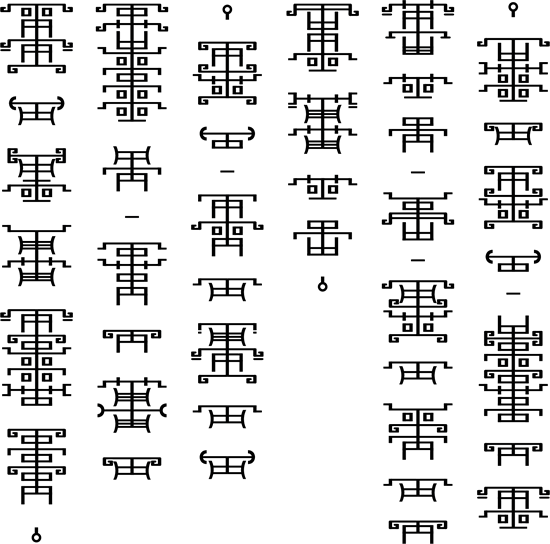Sample text (Short form)
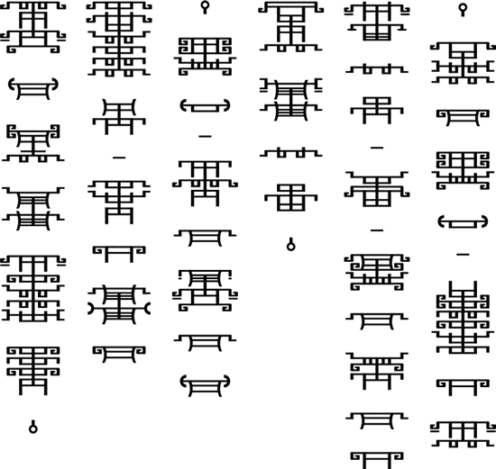摘抄：「棒文拼写方案」相关
Sticks 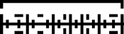
Sticks is an alternative alphabet for English invented by Kristian Baird. It can also be used to write Latin, Dutch and Welsh. Sticks is based on the letters T, L and I, and was also party inspired by repeating patterns which change slightly for each time.
Notable features
- Type of writing system: alphabet
- Direction of writing: any
- Used to write: English, and also Latin, Dutch and Welsh
- Each letter name comes from the first few letters of a type of wood, hence the name "Sticks".
Sticks
Letters with a * next to them, should be pronounced with an "Ur" in combination with their original pronunciation. For example, V is pronounced "Vur", and Q at "Kur".
Sample text
I think therefore I am.Stox
Stox is a alternative script for English and other Indo-European languages invented by Jon McV. He chose the name Stox, which is pronounced like "stalks", because of the shapes of the letters.
Stox is related to Jon's other script, Blox, because both form words by grouping the letters with a similar sound-production device in the same group i.e. d, t, þ, and ð and n as all of these sounds are usually either pronounced dental or post-dental.
Notable features
- Type of writing system: alphabet
- Direction of writing: any
- Used to write: English and other Indo-European languages
- There are two different forms of the Stox script, the "book" version and the "cursive" version. The main difference between the two is that the book version uses a very important item called the "guide line" to direct the rest of the letters, as each letter has to form either a 90 degree or 45 degree angle with the guideline. The cursive form doesn't use the guideline. Since the letters do not have a 'stalk' to attach themselves to, they all start to curl and connect with one another rather than with the guide line itself.
- Lines can run parallel to eachother and can connect where a 90 degree or 45 degree angle can be formed between the two letters.
Stox alphabet
Sample text
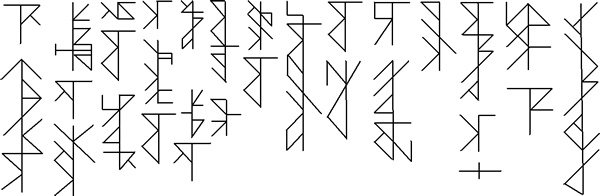If you have any questions about the Stox alphabet, you can contact Jon at: nightshadespectre@gmail.com
Blox alphabet
The Blox script was invented by Jon McV. as an alternative script for Semitic languages such as Arabic. It could also be adapted to write just about any other language.
The consonsants are all made up of vertical lines. while the vowel are all horizontal lines, which are written above, through the middle of, or below the consonants. If a vowel can be be angled to link to the half lines of consonants, as in the angled and mixed versions of the sample text below.
Notable features
- Type of script: alphabet
- Direction of writing: any direction
- Used to write: Semitic languages such as Arabic
Blox script
Sample text
If you have any questions about the Blox alphabet, you can contact Jon at: nightshadespectre@gmail.com
ULOG 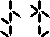
The ULOG alphabet was invented by Kuznetsov Michael (Кузнецов Михаил) for an online game "Dark Horizon" that he wrote with a friend, and uses it mainly for writing inscriptions in his conlang, ULOG.
ULOG stands for the "Universal Language of the Galaxy", or "Всеобщий язык Галактики" in Russian.
Notable features
- Type of writing system: alphabet
- Direction of writing: left to right in horizontal lines
- Used to write: ULOG, Russian, English, German, French, Japanese, Korean & Chinese (Mandarin)
ULOG alphabet for Russian
ULOG alphabet for English
Numerals
ULOG uses a duodecimal numeral system
More details of ULOG numerals (PDF)
Sample texts
Russian
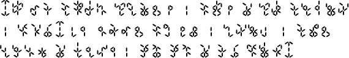Transliteration: Все люди рождаются свободными и равными в своем достоинстве и правах. Они наделены разумом и совестью и должны поступать в отношении друг друга в духе братства.
English
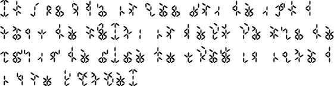Transliteration: All human beings are born free and equal in dignity and rights. They are endowed with reason and conscience and should act towards one another in a spirit of brotherhood.
Download a ULOG font (TTF, 9K)
Details of how to use ULOG to write other languages (PDF, 316K)
Four-segment Alphabet 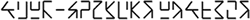
Four-segment Alphabet was an IPA-based writing system invented by Julius Alfred Cordova of Iloilo City, Philippines. The best thing about this writing system is that it can fill all the areas of pulmonic consonant chart of the IPA, even the shaded areas with fewer diacritics, by simply combining two angles which indicate the articulation of a consonant. The upper angle indicates the manner of articulation and the lower angle indicates the place of articulation. For vowels the upper three segments indicate openness and the lower three segments indicate backness and roundness, and centralization. In addition, the numeral system is used to write and read fractions and decimals correctly and to avoid writing zeros.
Julius created this writing system to spell words phonetically and to identify the articulation of each letter. He also proposes that it could be used for other languages.
Notable features
- Type of writing system: alphabet with functional segments
- Writing direction: left to right in horizontal rows
- Used to write: any language
Pulmonic Consonants
Notes
- Voiced nasals, trills, flaps, approximants, lateral approximants and lateral flaps have their voiceless forms just flip them leftward.
- Glottal is the center piece of the four quadrants because it was aspirated in release.
- The velar lateral flap and rounded close front vowel have the same symbol. This is a coincidence like l (lowercase L) and 1 (one) are similar in shape.
- A challenge for Omniglot fans: shaded areas of consonant chart also have their own symbols but it is not necessary to put them in the chart. If you are curious what they look like, guess them.
Sample Text in English
Transliteration in International Phonectic Alphabet
ɔl hjumən biɪŋs ər bɔrn fri ənd ikwəl ɪn dɪgnɪti ənd raɪts. ðeɪ ər ɛndaʊd wɪθ rizən ənd kɒnʃəns ənd ʃʊd ækt toʊrdz wʌn ənʌðər ɪn spɪrɪt əv brʌðərhʊd.
Transliteration in Roman Alphabet
All human beings are born free and equal in dignity and rights. They are endowed with reason and conscience and should act towards one another in a spirit of brotherhood.
(«Article 1 of the Universal Declaration of Human Rights»)
Numeral Examples
If you have questions about this alphabet you can contact Julius at juliusdalum@yahoo.com.
摘抄：「含语拼音方案」相关
Elektrum
Elektrum was invented by Ian James in October 2011, as part of a series of regularly-formed alphabets founded on phonetic principles. The name comes from the ancient alloy made of silver and gold, and hints at a mix of pre-classical epigraphy and modern phonology.
Notable features
- Type of writing system: alphabet, with simple syllabification rules.
- Direction of writing: left to right, but could be boustrephedon.
- Accomodates a wide range of phonemes, each regularly formed.
- Vowels have structures derived from spectrogram images of their spoken sound.
- Consonants and vowels differ visually, in that the latter do not have frames, suggesting their relative openness.
- The overall effect is epigraphic, since the letters are not cursive but stand geometrically in a formal manner.
- Versatile syllabics – final or closing consonants are simply given a no-vowel marker.
Consonants
The consonants are all made with enclosed shapes, their frames matched to regions of articulation. Within the frames are various points, or rivets, or bumps, which identify the manner of articulation. Plosives are given forms which are reminiscent of plates being bolted hard to a surface. Devoicing is shown with a middle horizontal. The velar series ranges from /k/ to /q/ position, depending on adjacent vowels (front or back). The glottal region includes some "most rear" phonemes.
The fricatives are given simpler internals, since their sounds are freer, softer and continuous. Note the way the extra sibilants are used in the affricate situation. Semivowels have symbols related to their vowel form.
Vowels
The vowels use point motifs similar to those found within consonants, but they have no enclosing frame (their sound is free of constriction). The tone suffixes may be used together to show rise and fall.
The shapes for the vowels are based on structures revealed in spectrograms of the spoken sounds – the grouping of their formant frequencies. For example, here are spectrogram patterns for the vowels [i], [æ] and [o], where the vertical axis shows frequency in Hz and the horizontal axis is time:
Extensions
Mattias Persson has suggested various extensions to the system described above. They are realized without much fuss, using the basic elements already given: devoiced nasals, implosives, fricative ejectives and another semivowel. The "voiceless throat nasal" can represent a more definite caesura than the "voiced" equivalent. A nasalizer (coming after vowels) is made from the nasal internals.
Sample text
This is the first line of Shakespeare's sonnet 18, phonetically spelt out using Elektrum. (Ian commonly uses Shakespeare's poetry because of its relatively rich mix of phonemes.)
Shall I compare thee to a summer’s day?未完待续